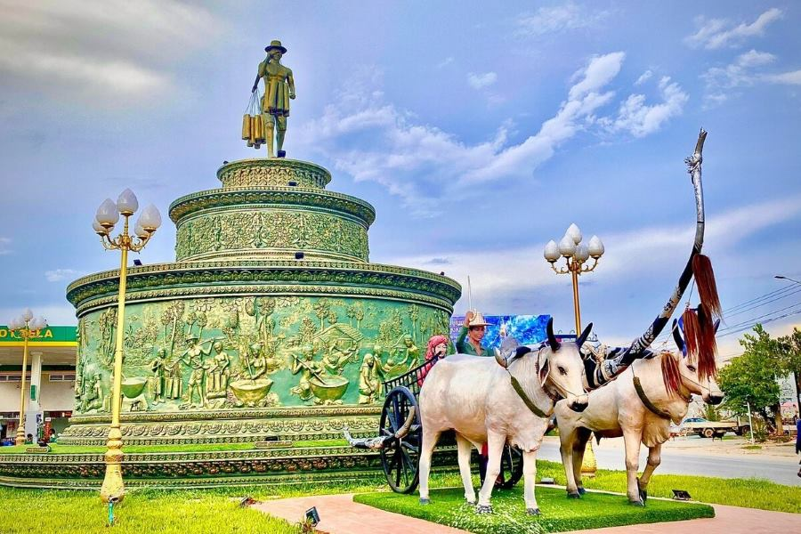

អំពីខេត្តកំពង់ស្ពឺ
ខេត្តកំពង់ស្ពឺ ស្ថិតនៅភាគនិរតីនៃព្រះរាជាណាចក្រកម្ពុជា និងជាខេត្តដែលមាន ធនធានធម្មជាតិដ៏សម្បូរបែប។ ខេត្តនេះល្បីល្បាញដោយសារភ្នំ ទឹកធ្លាក់ ចម្ការត្នោត និងផលិតផលស្ករត្នោតដែលមានគុណភាពខ្ពស់។ កំពង់ស្ពឺក៏ជាតំបន់កសិកម្ម និងឧស្សាហកម្មដ៏សំខាន់ ដែលរួមចំណែកក្នុងការអភិវឌ្ឍសេដ្ឋកិច្ចជាតិ។
ប្រវត្តិសង្ខេប
ខេត្តកំពង់ស្ពឺមានប្រវត្តិយូរអង្វែង និងជាតំបន់ដែលប្រជាពលរដ្ឋរស់នៅ ពឹងផ្អែកលើវិស័យកសិកម្ម និងការផលិតស្ករត្នោតតាំងពីបុរាណ។ បច្ចុប្បន្ន ខេត្តនេះបានអភិវឌ្ឍលើវិស័យឧស្សាហកម្ម រោងចក្រ និងទេសចរណ៍ធម្មជាតិ ដែលធ្វើឱ្យកំពង់ស្ពឺក្លាយជាខេត្តមានសក្ដានុពលមួយ។
កន្លែងទេសចរណ៍សំខាន់ៗ
- ឧទ្យានជាតិគីរីរម្យ
- ទឹកធ្លាក់ចំបក់
- សហគមន៍អេកូទេសចរណ៍ចំបក់
- ភ្នំឱរ៉ាល់
- ចម្ការត្នោតកំពង់ស្ពឺ
- វត្តភ្នំតូច
ទីតាំងភូមិសាស្ត្រ
ខេត្តកំពង់ស្ពឺ ស្ថិតនៅភាគនិរតីនៃប្រទេសកម្ពុជា មានព្រំប្រទល់ជាប់ រាជធានីភ្នំពេញ ខេត្តកណ្តាល ខេត្តកំពង់ឆ្នាំង ខេត្តពោធិ៍សាត់ ខេត្តកោះកុង ខេត្តកំពត ខេត្តតាកែវ និងខេត្តព្រះសីហនុ។ ខេត្តនេះមានភ្នំ ព្រៃឈើ និងដីកសិកម្មធំទូលាយ ដែលសមស្របសម្រាប់ ការដាំដំណាំ ការចិញ្ចឹមសត្វ និងការអភិវឌ្ឍវិស័យទេសចរណ៍។